Proprietary to General Electric
Direction 5193575-800, Rev# 5
LightSpeed 7.X Service Information - Adv
Proprietary to General Electric |
| Last Revised: | November 2004 |
The JEDI Generator Tool contains many key service features for the X-Ray Generation subsystem.
This tool can be thought of as the “portal” to many of the important X-Ray generation service tools. The windows launched from within Generator Tool - JEDI will consist of three main areas: the Message area, Status and Result screen, and Instruction area (see Illustration 2).
Illustration 1: Example Screenshot of Generator Tool Portal
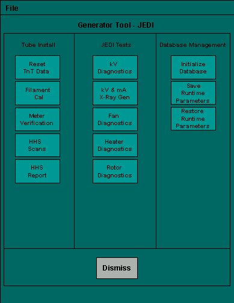
Use this tool to reset the Tracking and Trending data stored in the JEDI Generator. This tool can reset either the Tube or the Generator TnT data. To initiate the selected operation, press [RESET] .
Illustration 2: Reset TnT Data Tool
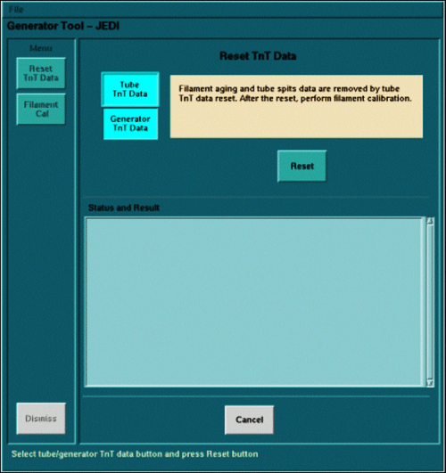
In Illustration 2, note the “Message Area” at the top (tan), the “Status and Result Screen” in the middle (light green) and the “Instruction Area” at the bottom (dark green).
Resetting Tube TnT Data will clear the dynamic filament calibration data (filament aging corrections). This SHOULD NOT affect system performance. However, you should be aware that this occurs.
Illustration 3: JEDI db after reset Tube TnT
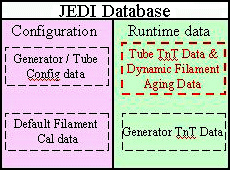
Resetting the Generator TnT data will clear only the Generator TnT data.
Illustration 4: JEDI db after reset Generator TnT
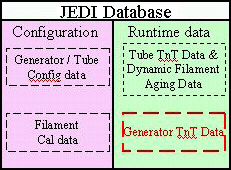
The Filament Calibration tool is used to calibrate the JEDI Generator based on the X-Ray Tube. It is part of the “Generator Characterization” procedure. Pressing [SCAN] begins the calibration process. If this program hangs, it does not overwrite the current calibration parameters stored in the JEDI database. The same holds true if the user cancels the process.
This tool performs a pre-determined scan sequence and displays the results in the Status and Result screen. Both the small and large filaments to must pass for the system to scan properly.
For Filament Calibration to run properly, the system must be able to scan. As such, the parameters stored in the JEDI generator database must be close to calibrated. Loading the "default database" will always provide a baseline.
The Meter Verification tool is used to verify that the internal mA and kV measurement circuits are operational.
A delay time can be entered. Press [ACCEPT] to start the test after the entered delay time passes.
The screen shows the current value and the status (OK or NG [not good]) of each measurement. OK indicates that a measurement passes the required system specifications. All three measurements must pass for the system to work properly.
Clicking on the kV Diagnostics button will launch a separate screen with three diagnostic tools that are available for troubleshooting the X-Ray Generation subsystem. To run these tools, hardware interaction is required.
Illustration 5: kV Diagnostics (Example - actual may vary slightly)
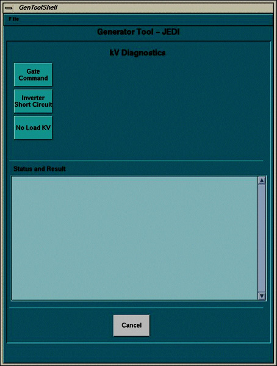
Each tool provides instructions for setting up the test as shown in Illustration 6. Each test asks for confirmation that the necessary steps have been performed. Following that, each tool accepts entry of setup parameters (defaults will be given) before performing the test (see Illustration 7).
Illustration 6: Example of test with instructions
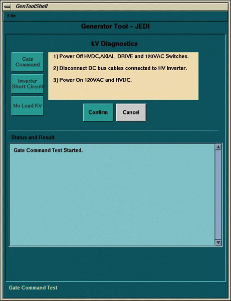
Illustration 7: Example of test and parameters
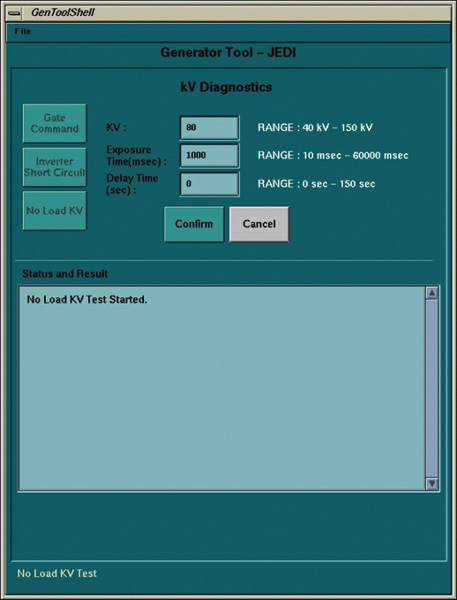
This tool can be used to scan in a diagnostic-type setting. It allows for collecting High Voltage statistics during a single x-ray exposure. Virtually all possible single exposure scan types at the system level are allowed. Illustration 8 provides a sample screen shot.
Illustration 8: kV and mA (X-Ray) tool
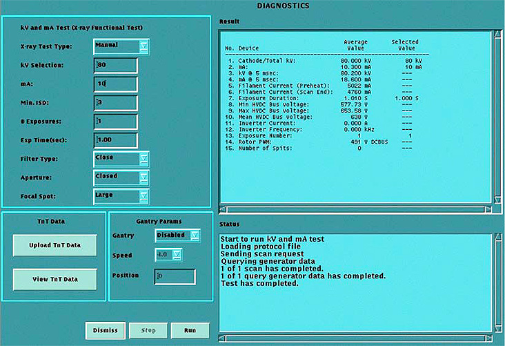
Table 1: kV and mA (X-Ray) Tool Diagnostic Measurements
| Measurement | Explanation |
| *Cathode/Total kV: | Scan kV |
| *mA: | Measured mA during scan |
| *kV @ 5 msec: | Measured kV around the 5 ms (approx. 4-6 sec) point in the scan |
| *mA @ 5 msec: | Measured mA around the 5 ms (approx. 4-6 sec) point in the scan |
| Filament Current (Preheat): | Measured filament current during preheat phase |
| Filament Current (Scan End): | Measured filament current at the end of the scan |
| Exposure Duration | Measured exposure duration |
| Min HVDC Bus Voltage | Minimum HVDC Bus Voltage measured during exposure |
| Max HVDC Bus Voltage | Maximum HVDC Bus Voltage measured during exposure |
| *Mean HVDC Bus Voltage | Mean of all HVDC measured values |
| *Inverter Current | Measured inverter current |
| *Inverter Frequency | Measured inverter frequency |
| Exposure Number | Exposure number that just finished (will display statistics if user cancels) |
| Rotor PWM | Recorded Voltage necessary to drive Anode Rotation |
| Number of Spits | Total count of tube spits during exposure |
The kV and mA (X-Ray) tool can also upload (to a file on the console) or view the TnT data. You must upload the data before you view it. The upload feature overwrites any previous data stored in the file.
The Fan Diagnostic tool turns the Inverter and HV Tank fans on for a period of time. A visual check to verify that they are working is necessary in conjunction with this diagnostic.
The Heater Diagnostic tool runs a sequence that drives the tube filaments. If an error occurs, the diagnostic notifies of the error. If this occurs, check the system log.
The Rotor Diagnostic tool runs a sequence that rotates the anode. If an error occurs, the diagnostic notifies of the error. If this occurs, check the system log.
The JEDI database management tools allow for saving and restoring the existing JEDI database on the JEDI, as well as starting from the default (factory default) database. The tools in this section only work with the JEDI database and do not impact the JEDI firmware. To verify that the generator contains the latest firmware version, use the Flash Download Tool.
The “Initialize Database” button will upload the factory default database to the JEDI generator. This includes resetting all generator and tube Tracking and Trending data, and resetting the Filament Calibration data to the default settings.
Illustration 9: JEDI db after Initialize Database
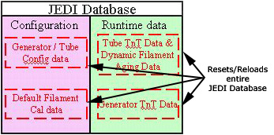
The “Save Runtime Parameters” button will upload the JEDI runtime parameters to the console.
Illustration 10: JEDI db after Save Runtime Parameters
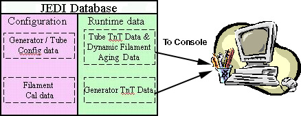
This is generally done when replacing equipment to save important data to the console so that it can be restored on new JEDI components. Other uses may exist.
The “Restore Runtime Parameters” button will upload the JEDI runtime parameters from the console to the JEDI generator.
Illustration 11: JEDI db after Restore Runtime Parameters
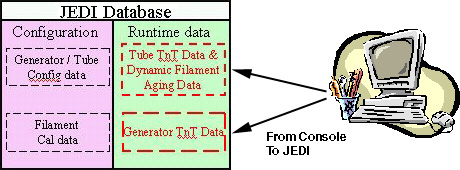